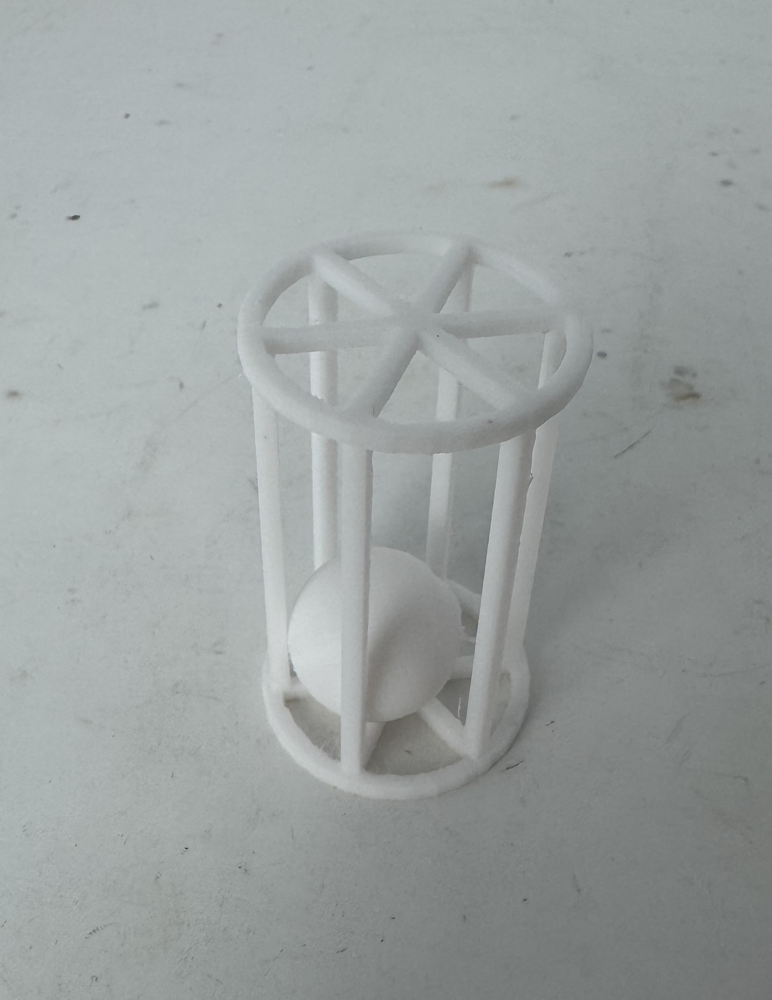
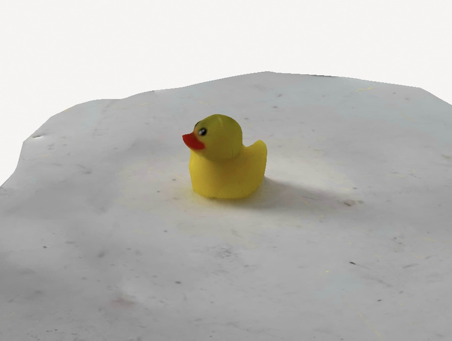

Week 5: 3D Design, Printing & Scanning
3D-Print "Ball in a Cage"
Concept & Reasoning
For this week's assignment, we had to 3D-print an object that couldn't easily be manufactured through traditional means. I chose to create a "ball in a cage"—a single-piece print featuring a spherical ball trapped inside a surrounding structure.
Additive Manufacturing Advantage: This design is nearly impossible to replicate with subtractive methods because the ball must be printed inside the cage without any separate assembly.
Desk Décor: It also makes for a fun desk toy—gently rattling the ball around makes it clear how the design was printed in one shot.

3D Scanning with Photogrammetry
Initial Plan (LIDAR)
I initially hoped to use Polycam's LIDAR feature to scan an object, but encountered issues—my scans often came out "mashed up." Rather than lose time troubleshooting, I switched to photogrammetry.
Photogrammetry Process
Capturing Images: Photogrammetry involves taking many photos of the object from multiple angles. I experimented with scanning a small USB duck. After a few tries, I realized how essential it is to keep both the camera and the duck as still as possible.
Data Cleanup: Once the photos were processed by Polycam, I imported the resulting 3D model into Meshmixer to fill gaps and smooth any rough areas. The final result was a neat, textured model of the duck, ready for viewing or further editing.

Final Project Update
While still refining all the details, here's the current plan for my final project: a "punishment" lockbox that sets off an alarm when its lid is opened—without using an actual physical lock mechanism.
Punishment Lockbox Project Plan
Bill of Materials
- ESP 32 Dev Board (or a similar microcontroller)
- Reed Switch & Matching Magnet (or a small limit switch)
- Piezo Buzzer (5V, either passive or active)
- 5V Power Supply (USB charger or DC adapter)
- Assorted Wires & Connectors (for internal wiring)
- 3D Printed Enclosure (lid + base with standoffs)
- Misc. Hardware (screws, adhesives, etc.)
Week-by-Week Roadmap
Week 1:
- Acquire all necessary parts (microcontroller, reed switch, buzzer, etc.).
- Familiarize myself with basic electronics—specifically how to read a digital input and play tones on a buzzer.
- Sketch the initial enclosure design (approximate dimensions, hinge location, reed switch placement).
- Decide on cable pass-through placement (so I can charge my phone while it's inside).
Week 2:
- Set up a breadboard prototype with the microcontroller, reed switch, and buzzer.
- Write simple code to detect the switch state and sound the buzzer. Experiment with different alarm tones or patterns.
- Refine the enclosure design—nailing down final dimensions, magnet placement, and any internal support structures.
Week 3:
- 3D-print the enclosure (lid and base).
- Assemble and test the box, checking hinge alignment and ensuring there's enough space for all electronics.
- Mount the microcontroller and wiring; verify that the reed switch accurately detects when the lid opens.
- Fine-tune the Arduino code (add a delay before the alarm or a silent mode toggle if desired).
Week 4:
- Testing & Optimization: Place my phone inside to simulate real-world use and verify the alarm triggers reliably.
- Address any mechanical misalignments or clearance issues—reprint or modify parts if needed.
- Tidy up wiring and finalize code. If time permits, consider extra features (e.g., a small display or time-delay lock).
Closing Thoughts
This week's foray into 3D design, printing, and scanning highlighted the strengths of additive manufacturing and digital modeling. I'm also excited to see how these skills will translate to my final "punishment" lockbox project—particularly in designing a functional yet snug enclosure for the electronics. Stay tuned as I continue iterating and bring this idea to life!
← Back to Home